Showcase packs
ReadyNeeds your reviewBlocked
EXCAVATOR-017Bobcat E20


- Do: Call 811 to learn where buried lines run (marked by the flag) (e20-s1)
- Check: Look for holes (e20-s1)
- Check: Look for drop-offs (e20-s1)
- Check: Look for soft ground (e20-s1)
Call 811 before you dig. Watch for holes, drop-offs and soft ground.
Shown: No machine controls drawn.
Source: Rent It Safely: Safety Rules for Bobcat Compact Excavators (B-1699), PDF p. 2, "Knowing the Worksite"
Redrawn picture-first on 2026-10-17 after the operator's gallery review; awaiting the named reviewer (the operator).
- 811 matches Bobcat's sheet and the operator's default.
- No utility colour codes are invented.
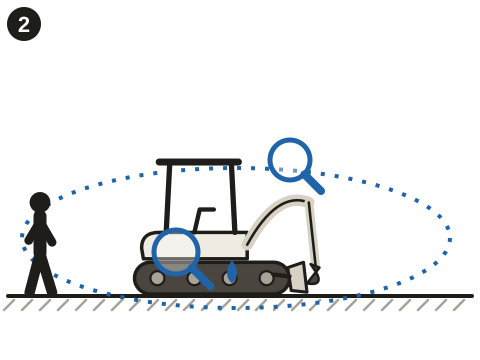
- Do: Walk all the way around the machine before starting (e20-s2, pol-renter-walkaround)
- Check: Look for leaks (e20-s2)
- Check: Look for broken or damaged parts, like a cracked hose (e20-s2)
Walk around before you start: leaks, broken or damaged parts.
Shown: Original line drawing of a canopy compact excavator in E20 proportions, not traced from any photo or OEM figure; no controls.
Source: Rent It Safely: Safety Rules for Bobcat Compact Excavators (B-1699), PDF p. 1, "Before Operating"; Service Schedule: E19, E20 Compact Excavator (SS EXC E19 E20-0315), PDF p. 1; pol-renter-walkaround
Redrawn picture-first on 2026-10-17 after the operator's gallery review; awaiting the named reviewer (the operator).
- The silhouette reads as a canopy compact excavator.
- The walk-around matches the Northridge policy (renter: leaks and damage).
Belt on. Levers and controls in neutral. Start only from the seat.
Shown: Needs the E20's real control layout from the OMM: lever positions, the console and the key switch. Nothing is drawn until then.
Source: Rent It Safely: Safety Rules for Bobcat Compact Excavators (B-1699), PDF p. 1; PDF p. 2, "While Operating"; E20 Compact Excavator Operation & Maintenance Manual, Operator station (to be located)
Control depiction needs OMM 7255004.
- Controls are drawn from the OMM's figures, not mirrored or stylized.
Levers pushed away = travel toward the blade. Check where the blade is before you move.
Shown: Top views of the undercarriage and blade. The levers' real form and position come from the OMM, so this panel waits for it.
Source: Rent It Safely: Safety Rules for Bobcat Compact Excavators (B-1699), PDF p. 2, "While Operating"; E20 Compact Excavator Operation & Maintenance Manual, Travel controls (to be located)
Control depiction needs OMM 7255004; the rule itself is sourced.
- Direction arrows checked against the OMM's travel figure.
- Any travel pedals are shown only if the OMM shows them for this configuration.
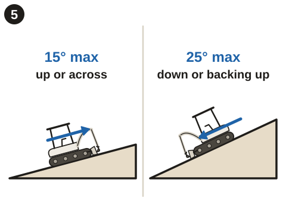
- Check: Driving up a slope: 15° at most (e20-s7)
- Check: Across a slope: 15° at most (rear view) (e20-s7)
- Check: Driving down a slope, or backing up one: 25° at most (e20-s7)
- Don't: Swinging a load on a slope (e20-s7)
Up or across: 15 degrees at most. Down, or backing up: 25 degrees at most. No swinging on a slope.
Shown: Side views up and down a slope and a rear view across one, each with its angle limit; the machine is drawn in a travel pose with the arm low and, when backing up, facing downhill.
Source: Rent It Safely: Safety Rules for Bobcat Compact Excavators (B-1699), PDF p. 2, "While Operating"
Redrawn picture-first on 2026-10-17 after the operator's gallery review; awaiting the reviewer and the cross-check against the E20 OMM.
- 15° (across or up) and 25° (down or backing up) match B-1699 p. 2.
- Backing up is drawn with the machine facing downhill.
- Cross-check against the E20 OMM when it arrives.
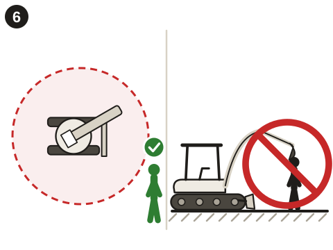
- Check: People stay outside the swing area (e20-s5)
- Do: Look where you will travel or swing before moving (e20-s5)
- Don't: Lifting the boom or bucket over a person (e20-s5)
Keep people out of the swing area. Look before you move or swing. Never lift over anyone.
Shown: Top view; no controls.
Source: Rent It Safely: Safety Rules for Bobcat Compact Excavators (B-1699), PDF p. 2, "While Operating"
Redrawn picture-first on 2026-10-17 after the operator's gallery review; awaiting the reviewer and the cross-check against the E20 OMM.
- The swing area is drawn around the whole machine.
- Matches B-1699 p. 2 (bystanders, lifting over people, looking before moving).
- Cross-check against the E20 OMM when it arrives.
1 Bucket on the ground. 2 Shut down. 3 Key out. 4 Console up.
Shown: Frames 1-3 use generic icons. Frame 4 needs the E20 console's real form and raise direction from the OMM.
Source: Rent It Safely: Safety Rules for Bobcat Compact Excavators (B-1699), PDF p. 2, "Leaving the Machine"; Service Schedule: E19, E20 Compact Excavator (SS EXC E19 E20-0315), PDF p. 1, console lockout
Frame 4 needs OMM 7255004; frames 1-3 are sourced.
- The sequence order matches B-1699.
- The console frame is drawn from the OMM.
Heavy end uphill. Slew lock on. Chain it down at the tie-down points.
Shown: Side view. Tie-down point and slew-lock positions come from the OMM.
Source: Rent It Safely: Safety Rules for Bobcat Compact Excavators (B-1699), PDF p. 1, "Safely Transporting the Machine and Attachment"; E20 Compact Excavator Operation & Maintenance Manual, Transporting (to be located)
Tie-down and slew-lock positions need OMM 7255004.
- Which end is heavy, checked against the OMM.
- The tie-down points match the OMM figure.
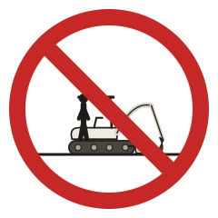
prohibition: A person riding on the excavator, crossed out
From e20-w1. Source: Rent It Safely: Safety Rules for Bobcat Compact Excavators (B-1699), PDF p. 2, "While Operating"
Drawn 2026-10-17 from the cited warning; awaiting the named reviewer (the operator).
- Matches B-1699 p. 2.
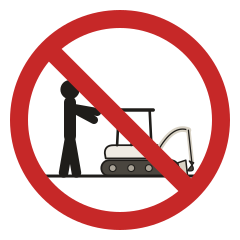
prohibition: Someone working the controls from the ground, crossed out
From e20-w2. Source: Rent It Safely: Safety Rules for Bobcat Compact Excavators (B-1699), PDF p. 2, "While Operating"
Drawn 2026-10-17 from the cited warning; awaiting the named reviewer (the operator).
- Matches B-1699 p. 2.
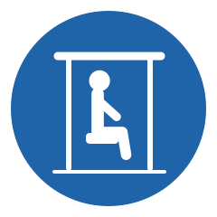
mandatory: The operator seated with hands and feet inside the canopy
From e20-w3. Source: Rent It Safely: Safety Rules for Bobcat Compact Excavators (B-1699), PDF p. 2, "Leaving the Machine"
Drawn 2026-10-17 from the cited warning; awaiting the named reviewer (the operator).
- Matches B-1699 p. 2 (while the machine is on).
prohibition: A fuel nozzle and a lit cigarette, crossed out
From e20-w4. Source: Rent It Safely: Safety Rules for Bobcat Compact Excavators (B-1699), PDF p. 1, "Before Operating"
Drawn 2026-10-17 from the cited warning; awaiting the named reviewer (the operator).
- Matches B-1699 p. 1.
limit: A lifted load at or under the machine's lift chart
From e20-s8. Source: Rent It Safely: Safety Rules for Bobcat Compact Excavators (B-1699), PDF p. 2, "While Operating"
Drawn 2026-10-17 from the cited warning; awaiting the named reviewer (the operator).
- Matches B-1699 p. 2; no number is drawn because the machine's chart governs.
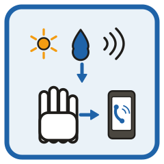
info: A warning light, a leak or an odd noise; then stop and call Northridge
From pol-stop-and-report. Source: pol-stop-and-report
Drawn 2026-10-17 from a Northridge demo policy; awaiting the named reviewer (the operator).
- Northridge demo policy wording.
Machine record
bobcat.e20.b3bl-canopy · route demo-ex017 (protected, unchanged) · serial DEMO-E20-0017 · 1 READY, 24 REVIEW_REQUIRED, 9 BLOCKED
Blockers
- OMM 7255004 not yet in hand (the operator is buying it): specifications, start-up, controls, attachments and transport points; panels 3, 4, 7 and 8.
- Knowledgeable review of the drawn panels and page text by the named reviewer (the operator).
Page text (phone preview)
Bobcat E20 compact excavator with canopy. Read the Start-Up Guide before you start.
1. Call 811 first. Watch for holes, drop-offs, soft ground. 2. Walk around it: look for leaks and damaged parts. 3. Belt on, controls in neutral; start only from the seat. 4. Levers pushed away drive toward the blade. Check it first. 5. Slopes: 15° across or up, 25° down or backing up. 6. Keep people clear of the swing; never lift over anyone. 7. Leaving: bucket down, engine off, key out, console up. 8. Transport: heavy end uphill, slew lock on, chained down. The Start-Up Guide shows each step.
Start-up and control steps come from Bobcat's E20 manual (7255004), not in hand yet. Publish after they are added and reviewed.
Keep people out of the swing area; never lift over anyone. Slopes: 15° across or up, 25° down or backing up. No swinging on a slope. No riders. Never work the controls from the ground. Keep hands and feet inside while the machine is on. No smoking while fueling. Stay within the lift chart on the machine.
Shortened picture-first on 2026-10-17 (one line per panel or sign); awaiting the reviewer.
(empty)
Fuel type and tank capacity come from the E20 manual.
Something wrong (a warning light, leak or odd noise): stop, lower the bucket to the ground, shut down and use Request Support.
Northridge policy plus Bobcat's leaving-the-machine sequence; awaiting the reviewer.
Return the keys and any attachments. Leave it with the bucket on the ground, engine off, key out and console up. Use Return checklist when you drop it off.
Accessories from the return checklist template; the parking line from Bobcat's sheet.
For emergencies call your local emergency number. For equipment issues, use the support contact on this page.
Mulemark's standard emergency wording (lib/onboarding/templates.ts).
Documents
- Bobcat E20 Start-Up Guide · startup_guide · hosted · guide/bobcat.e20.b3bl-canopy-start-up-guide.pdf (2 pages, 199 KB)
Carries the review-draft badge until every panel and sign is approved. - Bobcat E20 Operation & Maintenance Manual (sold by Bobcat) · manual · link · https://shop.bobcat.com/ca/e20-excavator-operation-and-maintenance-digital-manual-7255004enuspdf
Bobcat's official channel; the manual is sold, not free. - Bobcat Rent It Safely: compact excavator safety rules · safety_sheet · link · https://res.cloudinary.com/doosan-bobcat/image/upload/v1642696283/bobcat-assets/na-approved/products/excavators/multi-model/literature/b-1699-rentitsafely-excavator.pdf
Bobcat's free official rental safety sheet, linked.
Configuration
| generation | E20 with serial prefix B3BL (the model Bobcat sold until the new E20 of November 2025) |
|---|---|
| operator protection | canopy (matches photo candidate A) |
| tracks | rubber |
| arm | not established (OMM; candidate B shows the long arm) |
| control pattern | not established (OMM) |
| auxiliary hydraulics | not established (OMM) |
| blade | fitted |
Manual and supplements
- E20 Compact Excavator Operation & Maintenance Manual (7255004 ENUS; for serial B3BL11001 and above per Bobcat's listing (confirmed on receipt)) · to-purchase · private-only
- Rent It Safely: Safety Rules for Bobcat Compact Excavators (B-1699) (04/25) · in-hand · link-only
- Service Schedule: E19, E20 Compact Excavator (SS EXC E19 E20-0315) (0315) · in-hand · link-only
Photo
e20-a (used) · TaurusEmerald, CC BY-SA 4.0, modified. Source
- Removed the rental company's phone number on the lower body panel.
- Removed the rental company's name and 'Rents' sticker below the E20 model decal (the E20 decal is kept).
- Removed the rental fleet number label on the canopy roof.
- Cropped to 16:9 (left 0, top 326, 3658x2058) and resized to 1280x720.
- Added the credit label "Photo: TaurusEmerald (Wikimedia Commons), CC BY-SA 4.0, modified" in the top-right corner.
- e20-fullframe-a.jpg: the same edits on the full frame, resized to 1280x940, no label (getmulemark.com placement scenes (candidate)).
- Dropped the original's camera and location metadata.
e20-hero-a.webp: 173670 bytes · e20-hero-a.jpg: 183852 bytes
Showcase story: Guidance and handoff
A renter scans the tag on site, opens the Start-Up Guide built from Bobcat's documents and acknowledges it. Staff record the outbound condition, a support question is answered by pointing to the guide, and most returns are clean.
What it does not show: It shows the guidance was delivered and acknowledged, not that it was read or understood.
Checklist
Return and outbound template mini_excavator_skid_steer. Accessories: Keys, Attachments, Manual. Full review copy: docs/phase-e/packs/bobcat.e20.b3bl-canopy/review.md; storyboard: storyboard.md.
EXCAVATOR-3015Caterpillar 301.5


- 3,483-3,913 lb
- 92.1 in
- 5.8 gal
- 2.7 mph
To be written from the OMM's Before Operation section.
Shown: Not drawn until the OMM is in hand.
Source: Operation and Maintenance Manual M0088895: 301.5 to 302 CR Mini Hydraulic Excavators (full), p. 171
Needs OMM M0088895; the operator declined the purchase for now (2026-10-17). The page links Cat's official channel instead.
To be written from the OMM's Operator Station section.
Shown: Not drawn until the OMM is in hand.
Source: Operation and Maintenance Manual M0088895: 301.5 to 302 CR Mini Hydraulic Excavators (full), p. 51
Needs OMM M0088895; the operator declined the purchase for now (2026-10-17). The page links Cat's official channel instead.
To be written from the OMM's Engine Starting section.
Shown: Not drawn until the OMM is in hand.
Source: Operation and Maintenance Manual M0088895: 301.5 to 302 CR Mini Hydraulic Excavators (full), p. 236
Needs OMM M0088895; the operator declined the purchase for now (2026-10-17). The page links Cat's official channel instead.
To be written from the OMM's Machine Operation section.
Shown: Not drawn until the OMM is in hand.
Source: Operation and Maintenance Manual M0088895: 301.5 to 302 CR Mini Hydraulic Excavators (full), p. 174
Needs OMM M0088895; the operator declined the purchase for now (2026-10-17). The page links Cat's official channel instead.
To be written from the OMM's Slope Operation section.
Shown: Not drawn until the OMM is in hand.
Source: Operation and Maintenance Manual M0088895: 301.5 to 302 CR Mini Hydraulic Excavators (full), p. 41
Needs OMM M0088895; the operator declined the purchase for now (2026-10-17). The page links Cat's official channel instead.
To be written from the OMM's Parking section.
Shown: Not drawn until the OMM is in hand.
Source: Operation and Maintenance Manual M0088895: 301.5 to 302 CR Mini Hydraulic Excavators (full), p. 279
Needs OMM M0088895; the operator declined the purchase for now (2026-10-17). The page links Cat's official channel instead.
To be written from the OMM's Transportation Information section.
Shown: Not drawn until the OMM is in hand.
Source: Operation and Maintenance Manual M0088895: 301.5 to 302 CR Mini Hydraulic Excavators (full), p. 283
Needs OMM M0088895; the operator declined the purchase for now (2026-10-17). The page links Cat's official channel instead.
To be written from the OMM's Equipment Lowering section.
Shown: Not drawn until the OMM is in hand.
Source: Operation and Maintenance Manual M0088895: 301.5 to 302 CR Mini Hydraulic Excavators (full), p. 42
Needs OMM M0088895; the operator declined the purchase for now (2026-10-17). The page links Cat's official channel instead.
info: Northridge staff hand over the keys and walk the renter through start-up and the controls
From pol-cat-handover. Source: pol-cat-handover
Drawn 2026-10-17 from a Northridge demo policy; awaiting the named reviewer (the operator).
- Northridge demo policy wording.
info: A warning light, a leak or an odd noise; then stop and call Northridge
From pol-stop-and-report. Source: pol-stop-and-report
Drawn 2026-10-17 from a Northridge demo policy; awaiting the named reviewer (the operator).
- Northridge demo policy wording.
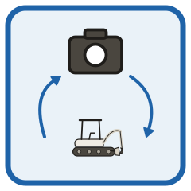
info: Photos of the machine when it goes out and when it comes back
From pol-condition-photos. Source: pol-condition-photos
Drawn 2026-10-17 from a Northridge demo policy; awaiting the named reviewer (the operator).
- Northridge demo policy wording.
Machine record
cat.301-5.canopy · route ezzs9ueg (protected, unchanged) · serial DEMO-301.5-3015 · 11 READY, 3 REVIEW_REQUIRED, 16 BLOCKED
Blockers
- OMM M0088895 not bought (operator: no for now): every operating step and all 8 panels stay unwritten; the page uses the handover policy and links Cat's manual.
Page text (phone preview)
Cat 301.5 mini excavator with canopy. Northridge walks you through start-up and the controls at handover.
Before operating, go through start-up and the controls with Northridge staff at handover. Cat's Operation and Maintenance Manual is linked under Manual.
Northridge policy; no Cat operating steps are written without the manual.
(empty)
Cat's safety rules come from OMM M0088895, not bought (operator decision, 2026-10-17).
Fuel tank: 22.0 L (5.8 gal).
From Cat's brochure, p. 2.
Something wrong (a warning light, leak or odd noise): stop safely and use Request Support.
Northridge policy.
Return the keys and any attachments. Northridge photographs the machine at handover and at return. Use Return checklist when you drop it off.
Return checklist template and Northridge policy.
For emergencies call your local emergency number. For equipment issues, use the support contact on this page.
Mulemark's standard emergency wording (lib/onboarding/templates.ts).
Documents
- Cat 301.5 Operation and Maintenance Manual M0088895 (sold by Cat Publications; search M0088895) · manual · link · https://catpublications.com/
Cat's official channel. Cat Publications has no stable product link (its search is a form), so the title names the media number.
Configuration
| generation | current 301.5 with the Cat C1.1 engine |
|---|---|
| serial prefix | MNH or ZHL (both covered by OMM M0088895-24) |
| operator protection | canopy |
| tracks | rubber |
| stick | standard (showcase configuration; not verifiable from the photo) |
| undercarriage | not established (fixed or expandable) |
Manual and supplements
- Operation and Maintenance Manual M0088895: 301.5 to 302 CR Mini Hydraulic Excavators (full) (M0088895-24 (en-us), June 2026. Cat Publications price seen 2026-10-17: download US$97, CD US$97, printed book US$114) · to-purchase · private-only
- Operation and Maintenance Manual M0088895-24: 301.5, 301.6, 301.7 CR, 301.8, 302 CR (publisher preview) (M0088895-24 (en-us), June 2026) · in-hand · link-only
- 301.5 Mini Excavator (specifications brochure AEHQ8144-08) (AEHQ8144-08) · in-hand · link-only
Photo
cat-301-5 (used) · LostplanetKD73, CC0 1.0, modified. Source
- Removed the round political sticker on the boom.
- Removed the dealer decal above the 301.5 model decal (the model decal is kept).
- Cropped to 16:9 (left 0, top 427, 4032x2268) and resized to 1280x720.
- Dropped the original's camera and location metadata.
301-5-hero.webp: 165148 bytes · 301-5-hero.jpg: 180811 bytes
Showcase story: Condition evidence
Staff take outbound photos at handover, then a return checklist flags new damage with photos and staff review and resolve it. One renter damage report arrives without photos, and the record shows exactly what was and wasn't captured.
What it does not show: It shows when something was recorded, not who caused it.
Checklist
Return and outbound template mini_excavator_skid_steer. Accessories: Keys, Attachments, Manual. Full review copy: docs/phase-e/packs/cat.301-5.canopy/review.md; storyboard: storyboard.md.
TRAILER-014Big Tex Trailers 35SA-12
- 12 ft
- 2 in
- 2,995 lb
- 4-way
- 1
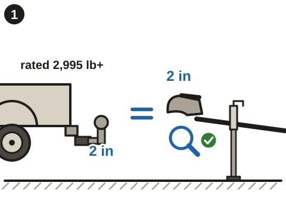
- Check: The truck's 2 in hitch ball matches the 2 in coupler, and the ball is rated 2,995 lb or more (35sa-s1, coupler)
- Don't: A cracked ball (35sa-s1)
- Don't: A worn ball (35sa-s1)
- Don't: A loose ball mount (35sa-s1)
2 in ball, rated 2,995 lb or more. No cracks, wear or looseness.
Shown: Side view, hitch and coupler not yet joined: the ball and coupler sizes are drawn as numbers with an equals sign and the rating beside a weight. No lever movement is drawn.
Source: Big Tex Trailers Owners Manual, p. 6, 1.2.4; pp. 36-37; 35SA Single Axle Utility Trailer (product page), Features & Options, Coupler
Redrawn picture-first on 2026-10-17 after the operator's gallery review; awaiting the named reviewer (the operator).
- The size and rating match p. 36 and the product page.
- The coupler is drawn as an A-frame ball coupler.
- The three rejected balls (cracked, worn, loose) match p. 6 and pp. 36-37.
- Nothing implies a latch direction.
- Do: Lower the coupler onto the 2 in ball, latch it and put the pin through (35sa-s3, coupler)
- Check: Test: the trailer jack lifts the hitch no more than 1 in (dashed outline), then lowers it (35sa-s3)
- Do: Wind the jack fully up (35sa-s3, 35sa-w1)
Seat it, latch it, pin it. Lift-test 1 inch at most, then raise the jack fully.
Shown: Side view. Big Tex's Figure 3-1 (p. 37) shows a generic ball-coupler mechanism latched and unlatched and refers to the coupler maker's instructions (not in hand) for details. The panel shows the seated, latched and pinned state as in that figure, with no lever travel. Jack drawn as the standard top-wind set-back jack.
Source: Big Tex Trailers Owners Manual, pp. 37-38
Redrawn picture-first on 2026-10-17 after the operator's gallery review; awaiting the named reviewer (the operator).
- The 1-inch test matches p. 38.
- The pin goes through the latch hole.
- The final frame shows the jack fully raised.
- Do: Chains crossed in an X under the coupler and hooked to the truck's chain loops (top view) (35sa-s4)
- Do: Each S-hook goes into its loop from underneath (35sa-s4)
- Check: Enough slack to turn, clear of the road (35sa-s4)
- Don't: A chain hooked to the ball mount, an interchangeable hitch part (35sa-s4)
Cross them under the coupler. Hooks into the loops from below. Slack, not dragging.
Shown: Rear-above view of the hitch area. Chains hook to chain loops on the tow vehicle, never to the ball or an interchangeable hitch part.
Source: Big Tex Trailers Owners Manual, p. 7, 1.2.5; p. 39
Redrawn picture-first on 2026-10-17 after the operator's gallery review; awaiting the named reviewer (the operator).
- The X crosses under the coupler.
- The hooks enter from underneath.
- The slack is drawn clear of the road.
- The rejected frame matches p. 39 (never an interchangeable hitch part).
- Do: Connect the 4-way plug while a helper watches the lights (35sa-s5, lights-plug)
- Check: Truck lights on: both tail lights glow (35sa-s5)
- Check: Brake pedal pressed: both brake lights are bright (35sa-s5)
- Check: Turn signals: the left lamp flashes for left and the right lamp for right (35sa-s5)
Plug in the 4-way. A helper checks the tail, brake and turn lights.
Shown: Rear view of the trailer in four cells, each with what the driver does (lights on, brake pedal, turn signal) above the lamps that light. The plug is drawn as a 4-way flat connector; no truck controls are drawn beyond those symbols.
Source: Big Tex Trailers Owners Manual, p. 12, 1.2.13; pp. 40-41; 35SA Single Axle Utility Trailer (product page), Features & Options, Trailer Plug
Redrawn picture-first on 2026-10-17 after the operator's gallery review; awaiting the named reviewer (the operator).
- The connector is a 4-way flat.
- Each cell lights the right lamps (tail, brake, left, right).
- The lamp positions match an LED utility-trailer layout without inventing extra lamps.
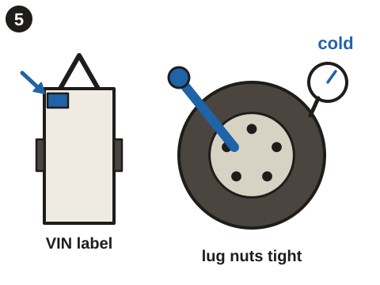
- Check: Set the pressure printed on the trailer's VIN label, with a gauge (35sa-s6, tire-pressure)
- Check: Check it cold: a hot tire is rejected, a cold one is right (35sa-s6, tire-pressure)
- Check: Lug nuts tight (no torque number: Big Tex publishes none) (35sa-s6)
- Don't: Tires with bald spots, bulges, cuts or showing cords (35sa-s6)
Pressure from the VIN label, tires cold. Lug nuts tight. Replace damaged tires.
Shown: Four cells: label to gauge, hot and cold tire, wrench on a lug nut, four tire defects. No pressure or torque number appears: Big Tex publishes neither a pressure (it points to the label) nor a torque (placeholder on p. 70).
Source: Big Tex Trailers Owners Manual, pp. 8-9, 1.2.8
Redrawn picture-first on 2026-10-17 after the operator's gallery review; awaiting the named reviewer (the operator).
- No pressure or torque numbers appear.
- The defects match p. 8 (bald spots, bulges, cuts, cords).
- Do: About 60% of the load in the front half and the heaviest item low over the axle, with the trailer hitched and level (35sa-s7)
- Check: Trailer and load together: 2,995 lb at most (35sa-s7, gvwr)
- Do: Hitch up first, then load (35sa-s7)
- Don't: Loading on a slope can tip the trailer (35sa-s7)
Hitch up first, on level ground. About 60% of the load in the front half, heavy items low over the axle. 2,995 lb at most.
Shown: Side view, hitched and on level ground (a spirit level). A dashed line marks the axle and a bracket marks the front half with ≈ 60%. The rear half is not labelled, because the manual gives only the front figure.
Source: Big Tex Trailers Owners Manual, p. 10; p. 51; p. 54, 4.3.1; p. 55, 4.3.1.1-4.3.1.2; 35SA Single Axle Utility Trailer (product page), Models & Dimensions, 35SA-12
Redrawn picture-first on 2026-10-17 after the operator's gallery review; awaiting the named reviewer (the operator).
- The ≈ 60% matches p. 55 (about 60% in the front half).
- The trailer is drawn hitched while loading.
- The weight figure matches the GVWR.
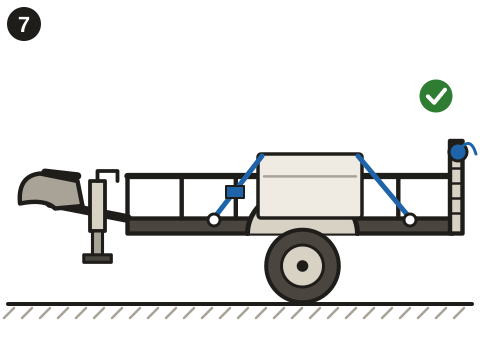
- Do: Strap the load to the tie-down loops, with the trailer hitched (35sa-s8, tie-downs)
- Check: Straps run to the bed's tie-down loops (top view) (35sa-s8, tie-downs)
- Do: Gate up and latched, with a pin in the latch (35sa-s8)
- Don't: An unlatched gate drops cargo on the road (35sa-s8)
Strap to the tie-down loops. Gate up and latched, pinned if the latch has a hole.
Shown: Side view, hitched, and a top-view inset of the bed's 4 tie-down loops (product page). The gate latch is drawn generically, because its exact form is not in the sources; the pin is drawn for a latch with a hole.
Source: Big Tex Trailers Owners Manual, p. 11, 1.2.11; p. 55; 35SA Single Axle Utility Trailer (product page), Features & Options, Tie-Downs; Ramps
Redrawn picture-first on 2026-10-17 after the operator's gallery review; awaiting the named reviewer (the operator).
- Straps go to the loops, not to the rails.
- The latch is generic, and the pin shows the case where the latch has a hole.
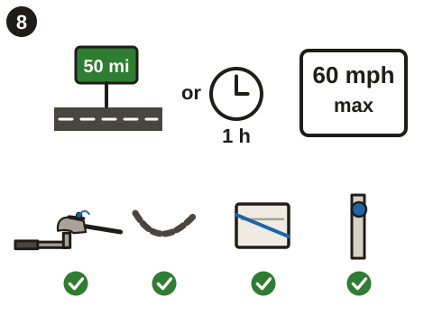
- Do: Every 50 mi or 1 h of towing, stop to check the rig (35sa-s9)
- Check: The coupler, chains, load and gate latch (35sa-s9)
Every 50 miles or hour of towing: check the coupler, chains, load and gate latch.
Shown: Icons only: a distance sign and a clock, the rig stopped with someone checking it, then four ticks. The speed limit moved to its own sign.
Source: Big Tex Trailers Owners Manual, p. 58, "Make Regular Stops"
Redrawn picture-first on 2026-10-17 after the operator's gallery review; awaiting the named reviewer (the operator).
- The interval matches p. 58.
- The four checks match p. 58 (coupler, chains, load, latches).
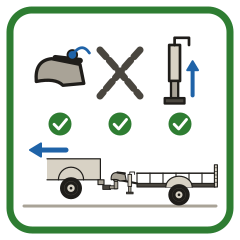
checklist: Coupler latched and pinned, chains crossed and jack up, each ticked; then the rig moves off
From 35sa-w1. Source: Big Tex Trailers Owners Manual, p. 7, warning under 1.2.4
Drawn 2026-10-17 from the cited warning; awaiting the named reviewer (the operator).
- Matches p. 7 (coupler locked, chains attached, jack fully raised).
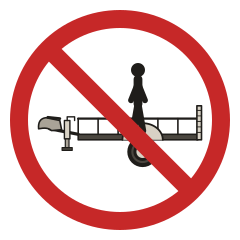
prohibition: A person riding in the trailer bed, crossed out
From 35sa-w2. Source: Big Tex Trailers Owners Manual, p. 12, 1.2.12
Drawn 2026-10-17 from the cited warning; awaiting the named reviewer (the operator).
- Matches p. 12 (never carry people).
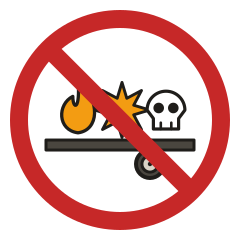
prohibition: Flammable, explosive and poisonous loads on the trailer, crossed out
From 35sa-w2. Source: Big Tex Trailers Owners Manual, p. 12, 1.2.12
Drawn 2026-10-17 from the cited warning; awaiting the named reviewer (the operator).
- Matches p. 12 (flammable, explosive or poisonous materials).
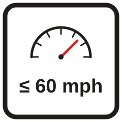
limit: A speedometer and ≤ 60 mph
From 35sa-w3. Source: Big Tex Trailers Owners Manual, p. 5, 1.2.2
Drawn 2026-10-17 from the cited warning; awaiting the named reviewer (the operator).
- 60 mph matches p. 5; the record keeps the manual's 'ideal conditions only'.
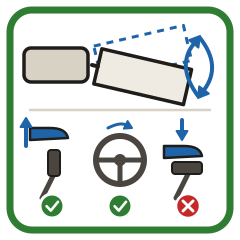
checklist: A swaying trailer, then foot off the gas (tick), steering as little as possible (tick) and no braking (cross)
From 35sa-w4. Source: Big Tex Trailers Owners Manual, p. 6, 1.2.3
Drawn 2026-10-17 from the cited warning; awaiting the named reviewer (the operator).
- Matches p. 6 (ease off, steer as little as possible, do not brake the tow vehicle).
Machine record
bigtex.35sa.12 · route demo-tr014 (protected, unchanged) · serial DEMO-35SA-0014 · 13 READY, 28 REVIEW_REQUIRED, 2 BLOCKED
Blockers
- Exact-model photo: no licensed 35SA photo exists; waiting on Big Tex's reply to the operator's permission request (sent 2026-10-17).
- Knowledgeable review of the finished guide and page text by the named reviewer (the operator).
- Lug-nut torque: Big Tex's manual leaves the value blank (p. 70); asked of Big Tex.
Page text (phone preview)
12 ft single-axle utility trailer with a 4 ft ramp gate. It tows on a 2-inch ball rated for 2,995 lb or more and has no brakes.
1. 2 in ball, 2,995 lb or more. Not cracked, worn or loose. 2. Seat, latch, pin. Lift-test ≤ 1 in, then jack fully up. 3. Cross the chains under the coupler, hooks up from below. 4. Plug in the 4-way. Check tail, brake and turn lights. 5. Tires undamaged, cold pressure per VIN label, lug nuts tight. 6. Load hitched, level: about 60% in front, heavy over axle. 7. Strap to the tie-down loops. Gate latched, pin if fitted. 8. Every 50 mi or hour: check coupler, chains, load, gate. The Start-Up Guide shows each step.
Shortened picture-first on 2026-10-17 (one line per panel or sign); awaiting the reviewer.
Don't move until the coupler is pinned, the chains are on and the jack is up. No riders. No flammable, explosive or poisonous loads. 60 mph maximum, in ideal conditions only. If it sways: ease off the gas, steer as little as possible, don't brake. Trailer and load together: 2,995 lb at most.
Shortened picture-first on 2026-10-17 (one line per panel or sign); awaiting the reviewer.
(empty)
No fuel or power system; the lights run from the tow vehicle, covered in the quick start.
Lights not working: check the 4-way plug is fully connected. Coupler won't latch: check the ball is 2 inches. Don't tow until it locks. Anything cracked, loose or damaged: don't tow. Use Request Support.
Condensed from sourced steps; awaiting the reviewer.
Return the straps, chain pins and spare tire. Unhitch: block the tires, unplug, unhook the chains, open the coupler, jack down on firm ground. Use Return checklist when you drop it off.
Shortened picture-first on 2026-10-17 (one line per panel or sign); awaiting the reviewer.
For emergencies call your local emergency number. For equipment issues, use the support contact on this page.
Mulemark's standard emergency wording (lib/onboarding/templates.ts).
Documents
- Big Tex Trailers 35SA-12 Start-Up Guide · startup_guide · hosted · guide/bigtex.35sa.12-start-up-guide.pdf (2 pages, 348 KB)
Carries the review-draft badge until every panel and sign is approved. - Big Tex Owners Manual · manual · link · https://www.bigtextrailers.com/wp-content/uploads/2023/11/Big-Tex-Trailers_Owners-Manual_2020.pdf
Official free copy, linked (no hosting without Big Tex permission).
Configuration
| bed length ft | 12 |
|---|---|
| bed width in | 77 |
| pull type | bumper pull, 2 in ball coupler |
| brakes | none fitted (axle has brake flanges only) |
| breakaway | not fitted (comes with the optional electric-brake kit) |
| rear gate | 4 ft tall 3-way ramp gate with coil-spring assist |
| trailer plug | 4-way flat |
| jack | 2,000 lb top-wind set-back jack with removable sand foot |
Manual and supplements
- Big Tex Trailers Owners Manual (Rev. March 2020. Draft state: the lug-nut torque table is a placeholder (p. 70, "NEED TO INSERT NEW WHEEL TORQUE GUIDELINES HERE")) · in-hand · link-only
- Standard Big Tex Electrical Connector Wiring Diagrams (Plug Contacts) (Undated. 4-way, 6-way, 7-way RV and 7-way semi wiring, including the breakaway switch, battery and charger) · in-hand · link-only
- Standard Big Tex Electrical Connector Wiring Diagrams (Wiring Diagram) (© 2006, sheet 63. 4-way, 6-way and 7-way contact layouts, viewed into the open end of plug or socket) · in-hand · link-only
Photo
No licensed exact-model photo exists yet. Exact-model photo: no licensed 35SA photo exists; waiting on Big Tex's reply to the operator's permission request (sent 2026-10-17).
Showcase story: Accessories and returns
Each rental goes out with straps, chain pins and a spare on the outbound checklist. When a renter returns it without the straps, the return checklist flags them missing, staff follow up and the item is resolved. Repeat renters and same-day turnarounds show how fast the loop runs.
What it does not show: It flags missing accessories, but it does not compare issued and returned items line by line.
Checklist
Return and outbound template utility_trailer. Accessories: Ratchet straps, Safety-chain pins, Spare tire. Full review copy: docs/phase-e/packs/bigtex.35sa.12/review.md; storyboard: storyboard.md.
TRAILER-2041Big Tex Trailers 14LP-14
- 14 ft
- 2-5/16 in
- 14,000 lb
- 7-way
- 2
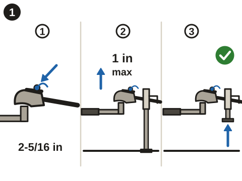
- Do: Lower the coupler onto a 2-5/16 in ball rated 14,000 lb or more, latch it and pin it (14lp-s1, 14lp-s2)
- Check: Test: the jack lifts the hitch no more than 1 in, then lowers it (14lp-s2)
- Do: Raise the jack fully (14lp-s2, 14lp-w5)
2-5/16 in ball rated 14,000 lb or more. Seat, latch, pin. Lift-test 1 inch at most, then raise the jack.
Shown: Side view. Big Tex's Figure 3-1 (p. 43) shows a generic ball-coupler mechanism latched and unlatched; the fitted Demco EZ Latch's own instructions are not in hand. The panel shows the seated, latched and pinned state, with no lever travel. Jack drawn as a side-wind drop-leg jack.
Source: Big Tex Trailers Owners Manual (Dump Trailers), pp. 41-44; 14LP Heavy Duty Ultra Low Profile Dump (product page), Features & Options, Coupler; Jack
Redrawn picture-first on 2026-10-17 after the operator's gallery review; awaiting the named reviewer (the operator).
- The ball size and rating match pp. 41-43 and the product page.
- The 1-inch test matches p. 44.
- The jack is the side-wind drop-leg jack, fully raised in the last frame.
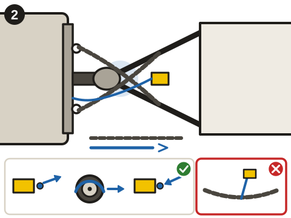
- Do: Chains crossed in an X under the coupler; the breakaway cable runs to the truck (top view) (14lp-s3, 14lp-s4)
- Close-up: The cable is shorter than the chain slack, so it pulls first (14lp-s4)
- Check: Test: pin out, the trailer brakes hold, pin straight back in (14lp-s4)
- Don't: The breakaway cable clipped to a safety chain (14lp-s4)
Chains crossed under the coupler. Breakaway cable to the truck, not a chain. Pull-test, pin straight back.
Shown: Rear-above view. The breakaway switch is drawn generically at the tongue; its exact housing is not in the sources.
Source: Big Tex Trailers Owners Manual (Dump Trailers), p. 7, 1.2.5; p. 8, 1.2.6; pp. 44-46
Redrawn picture-first on 2026-10-17 after the operator's gallery review; awaiting the named reviewer (the operator).
- The cable goes to the truck, never a chain or the hitch (pp. 45-46).
- The cable is drawn shorter than the chain slack.
- The test sequence matches p. 46.
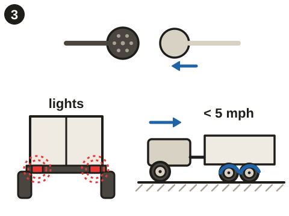
- Do: Connect the 7-way plug (14lp-s5, plug)
- Check: Rolling under 5 mph: the trailer brakes work when the controller is applied by hand (14lp-s5, brakes)
- Check: Tail lights and brake lights (14lp-s5)
- Check: Left and right turn signals (14lp-s5)
Plug in the 7-way and check the tail, brake and turn lights. Under 5 mph, apply the brake controller and feel the brakes.
Shown: The 7-way RV plug joined; the rig rolling forward slowly with brake arcs at the trailer wheels (the brake controller itself is not drawn); four cells for the tail, brake, left and right lamps.
Source: Big Tex Trailers Owners Manual (Dump Trailers), p. 12, 1.2.13; pp. 46-47; 14LP Heavy Duty Ultra Low Profile Dump (product page), Features & Options, Trailer Plug
Redrawn picture-first on 2026-10-17 after the operator's gallery review; awaiting the named reviewer (the operator).
- The connector is a 7-way RV round plug.
- The speed matches p. 47 (under 5 mph).
- No brake-controller design is drawn.
- Check: Hitched, with everyone outside the dump area (14lp-s8)
- Check: Level side to side and front to back (14lp-s8)
- Don't: Soft ground (14lp-s8)
- Don't: Power lines above a raised body (14lp-s8, 14lp-w4)
Hitched, level, firm ground. Everyone clear. Look up: no power lines.
Shown: Side view, hitched, with the dump area dashed: a person inside it is crossed out and a person outside is ticked. Below: two levels on the trailer (both ways), a wheel sinking in soft ground, a raised body under wires.
Source: Big Tex Trailers Owners Manual (Dump Trailers), p. 63, danger box; p. 64, 4.4.6; p. 67
Redrawn picture-first on 2026-10-17 after the operator's gallery review; awaiting the named reviewer (the operator).
- Level both ways and firm ground match p. 64.
- The power-line hazard matches p. 67.
- The dump area is drawn behind and beside the trailer, not as a measured distance.
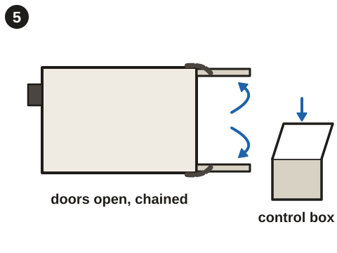
- Do: Swing the rear doors open and chain them to the sides (top view) (14lp-s8)
- Close-up: The door chain hooked to the side (14lp-s8)
- Do: Control box: locked, unlocked, open (14lp-s8, 14lp-s11)
Swing the rear doors open and chain them to the sides. Unlock and open the control box.
Shown: Rear view of the combo gate used as barn doors. The control box is drawn closed, then open, with no switch layout inside (not in the sources).
Source: Big Tex Trailers Owners Manual (Dump Trailers), p. 64, 4.4.6; 14LP Heavy Duty Ultra Low Profile Dump (product page), Features & Options, Gate; Storage
Redrawn picture-first on 2026-10-17 after the operator's gallery review; awaiting the named reviewer (the operator).
- Doors open against the sides with hold-back chains (p. 64).
- The control box and its lock are drawn generically; their fittings are not in the sources.
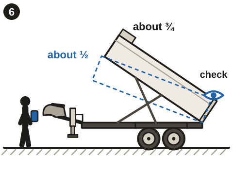
- Do: Raise the body to about ½ (dashed outline), then look behind (14lp-s9)
- Do: Raise it to about ¾, then look behind again (14lp-s9)
- Check: The operator stands well clear of the body and the dump area, remote in hand (14lp-s9)
- Don't: Walking away while the body is up (14lp-s9)
Stand well clear. Up to about half, look behind. Then about three-quarters, look again. Stay at the controls.
Shown: Side view, hitched. The remote is drawn as a plain hand-held unit with no buttons, because the fitted remote's controls are not in the sources. The operator is drawn well clear of the body and the dump area; the manual names no exact spot.
Source: Big Tex Trailers Owners Manual (Dump Trailers), pp. 63-64; p. 67
Redrawn picture-first on 2026-10-17 after the operator's gallery review; awaiting the named reviewer (the operator).
- About half and about three-quarters match p. 64.
- No remote buttons are drawn.
- The operator is clear of the body and the dump area.
- Don't: Someone under the raised body (14lp-w1, 14lp-s10)
- Don't: Jerking the hoist control to shake the load loose (14lp-s10)
- Don't: Braking hard to shake the load loose (14lp-s10)
- Check: Body lowered; the load freed by hand (14lp-s10)
Load stuck? Don't jerk the control or brake hard. Lower the body, then free the load by hand. Never go under a raised body.
Shown: Side views; no controls drawn.
Source: Big Tex Trailers Owners Manual (Dump Trailers), p. 63, danger box; pp. 64-65; p. 67
Redrawn picture-first on 2026-10-17 after the operator's gallery review; awaiting the named reviewer (the operator).
- Each rejected action matches p. 63 and p. 67.
- The last frame shows the body down before anyone frees the load.
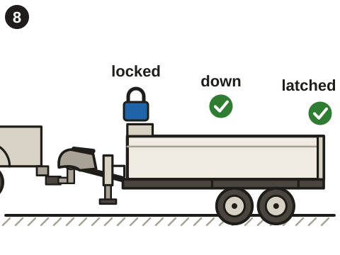
- Check: Body fully down (14lp-s11)
- Check: Rear doors latched (14lp-s11)
- Check: Hoist controls locked (14lp-s11)
- Do: Then drive (14lp-s11)
Body fully down. Doors latched. Controls locked. Then drive.
Shown: Side view; the control box drawn closed with a lock symbol.
Source: Big Tex Trailers Owners Manual (Dump Trailers), p. 63, danger box; p. 64, 4.4.6; p. 67
Redrawn picture-first on 2026-10-17 after the operator's gallery review; awaiting the named reviewer (the operator).
- The three checks match pp. 63-64.
- The padlock and the latch are drawn generically; their fittings are not in the sources.
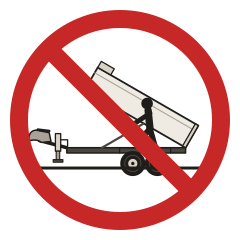
prohibition: A person under a raised dump body, crossed out
From 14lp-w1. Source: Big Tex Trailers Owners Manual (Dump Trailers), pp. 64-65, 4.4.8 "Body Prop"; p. 67
Drawn 2026-10-17 from the cited warning; awaiting the named reviewer (the operator).
- Matches pp. 64-65 and p. 67.
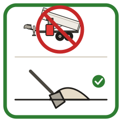
checklist: A jack pushing up the body, crossed out; unloading by hand with a shovel, ticked
From 14lp-w2. Source: Big Tex Trailers Owners Manual (Dump Trailers), p. 63, danger box
Drawn 2026-10-17 from the cited warning; awaiting the named reviewer (the operator).
- Matches the p. 63 danger box (unload by hand; never assist with a jack, crane or machine).
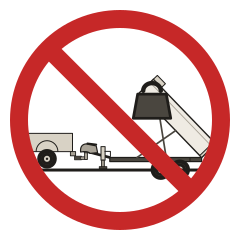
prohibition: A loaded body raised all the way, crossed out
From 14lp-w3. Source: Big Tex Trailers Owners Manual (Dump Trailers), p. 67, warning
Drawn 2026-10-17 from the cited warning; awaiting the named reviewer (the operator).
- Matches the p. 67 warning (loaded body, tow vehicle traction).
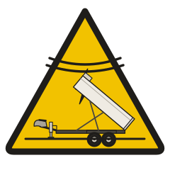
warning: A raised body near overhead wires, with a lightning bolt
From 14lp-w4. Source: Big Tex Trailers Owners Manual (Dump Trailers), p. 67, warning
Drawn 2026-10-17 from the cited warning; awaiting the named reviewer (the operator).
- Matches the p. 67 power-line warning.
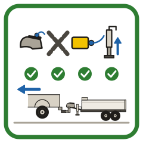
checklist: Coupler pinned, chains crossed, breakaway cable on and jack up, each ticked; then the rig moves off
From 14lp-w5. Source: Big Tex Trailers Owners Manual (Dump Trailers), p. 7, warning under 1.2.4
Drawn 2026-10-17 from the cited warning; awaiting the named reviewer (the operator).
- Matches p. 7 (coupler locked, chains and breakaway cable attached, jack fully raised).
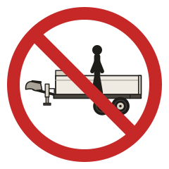
prohibition: A person riding in the dump body, crossed out
From 14lp-w6. Source: Big Tex Trailers Owners Manual (Dump Trailers), p. 12, 1.2.12; p. 63
Drawn 2026-10-17 from the cited warning; awaiting the named reviewer (the operator).
- Matches p. 12 and p. 63.
prohibition: Flammable, explosive and poisonous loads on the trailer, crossed out
From 14lp-w6. Source: Big Tex Trailers Owners Manual (Dump Trailers), p. 12, 1.2.12; p. 63
Drawn 2026-10-17 from the cited warning; awaiting the named reviewer (the operator).
- Matches p. 12 and p. 63.
limit: A speedometer and ≤ 60 mph
From 14lp-w7. Source: Big Tex Trailers Owners Manual (Dump Trailers), p. 5, 1.2.2
Drawn 2026-10-17 from the cited warning; awaiting the named reviewer (the operator).
- 60 mph matches p. 5; the record keeps the manual's 'ideal conditions only'.
mandatory: The operator holds the remote beside the raised body
From 14lp-s9. Source: Big Tex Trailers Owners Manual (Dump Trailers), p. 64, 4.4.6
Drawn 2026-10-17 from the cited warning; awaiting the named reviewer (the operator).
- Matches p. 64 (never leave the controls while the body is up).
limit: The load's weight at or under the trailer's payload decal
From 14lp-s7. Source: Big Tex Trailers Owners Manual (Dump Trailers), p. 62, 4.4.1-4.4.2; p. 63, 4.4.3-4.4.5; 14LP Heavy Duty Ultra Low Profile Dump (product page), Models & Dimensions, 14LP-14
Drawn 2026-10-17 from the cited warning; awaiting the named reviewer (the operator).
- Matches p. 62 (payload on the trailer's decal); no number is drawn because the decal governs.
Machine record
bigtex.14lp.14 · route 67uqc3q7 (protected, unchanged) · serial DEMO-14LP-2041 · 12 READY, 41 REVIEW_REQUIRED, 5 BLOCKED
Blockers
- Exact-model photo: no licensed 14LP photo exists; waiting on Big Tex's reply to the operator's permission request (sent 2026-10-17).
- Knowledgeable review of the finished guide and page text by the named reviewer (the operator).
- Hoist Manual applicability to the 14LP: not listed on its cover; asked of Big Tex.
- Lug-nut torque: Big Tex's manual leaves the value blank (p. 80); asked of Big Tex.
- Hoist capacity: not published by Big Tex.
Page text (phone preview)
14 ft tandem-axle dump trailer with electric brakes, breakaway and a battery-powered hoist. It tows on a 2-5/16 inch ball rated for 14,000 lb or more, with a brake controller in the truck.
1. 2-5/16 in ball, 14,000 lb or more. Seat, latch, pin, test. 2. Cross the chains. Breakaway cable to the truck; pull-test it. 3. Plug in the 7-way. Check lights; test brakes under 5 mph. 4. Before dumping: level, firm ground, people clear, no wires overhead. 5. Chain the doors open; open the control box. 6. Raise to about half, look behind; then three-quarters, look again. 7. Load stuck: lower the body, free it by hand. 8. Body down, doors latched, controls locked. Then drive. Tires: undamaged, cold pressure per VIN label, lug nuts tight. Load hitched and level; spread loose material evenly. The Start-Up Guide shows each step.
Shortened picture-first on 2026-10-17 (one line per panel or sign); awaiting the reviewer.
Never go under a raised body. Never push the hoist with a jack or machine; unload by hand. Don't fully raise a loaded body. A raised body near power lines can electrocute. Check overhead before raising. Don't move until the coupler is pinned, the chains and breakaway cable are on and the jack is up. No riders, and no flammable, explosive or poisonous loads. 60 mph maximum, in ideal conditions only. Stay at the controls while the body is up. Stay within the payload on the trailer's decal.
Shortened picture-first on 2026-10-17 (one line per panel or sign); awaiting the reviewer.
Hoist: 12 V battery with an onboard 110 V charger and a 5 W solar charger. The breakaway battery drains fast with its pin out: put the pin straight back.
Shortened picture-first on 2026-10-17 (one line per panel or sign); awaiting the reviewer.
Hoist won't lift: unload some by hand, then use Request Support. Load stuck: lower the body and free it by hand. Lights or brakes dead: check the 7-way plug. Breakaway test fails: don't tow. Use Request Support.
Shortened picture-first on 2026-10-17 (one line per panel or sign); awaiting the reviewer.
Return the straps, chain pins, spare tire and hoist remote. Body down, doors latched, controls locked. Unhitch: block the tires, unplug, unclip the breakaway, unhook the chains, open the coupler, lower the jack on firm ground. Use Return checklist when you drop it off.
Shortened picture-first on 2026-10-17 (one line per panel or sign); awaiting the reviewer.
For emergencies call your local emergency number. For equipment issues, use the support contact on this page.
Mulemark's standard emergency wording (lib/onboarding/templates.ts).
Documents
- Big Tex Trailers 14LP-14 Start-Up Guide · startup_guide · hosted · guide/bigtex.14lp.14-start-up-guide.pdf (2 pages, 408 KB)
Carries the review-draft badge until every panel and sign is approved. - Big Tex Owners Manual (Dump Trailers) · manual · link · https://www.bigtextrailers.com/wp-content/uploads/2023/11/Big-Tex-Trailers_Owners-Manual_2020-Dump-Trailers-2.pdf
Official free copy, linked (no hosting without Big Tex permission).
Configuration
| bed length ft | 14 |
|---|---|
| bed width in | 83 |
| pull type | bumper pull, 2-5/16 in adjustable ball coupler |
| brakes | electric, both axles (forward self-adjusting) |
| breakaway | fitted (complete breakaway system with zip cable) |
| trailer plug | 7-way RV |
| jack | 12,000 lb drop-leg jack (side wind) |
| hoist | self-contained scissor ram; power-up / power-down and gravity-down pump |
| battery | 12 V deep cycle, 5 A 110 V onboard charger |
| solar charger | 5 W (showcase configuration; the OEM page does not mark it standard or optional) |
| remote | wireless remote (showcase configuration; same caveat) |
| rear gate | combo gate: barn doors and spreader gate |
| ramps | not fitted |
| drop axles | not fitted |
Manual and supplements
- Big Tex Trailers Owners Manual (Dump Trailers) (Rev. March 2020. Draft state: the lug-nut torque table is a placeholder (p. 80)) · in-hand · link-only
- Hoist Manual (February 2013. Cover: 14LX/GX, 10LP-12 and 70LP dump trailers; BT-8, BT-10, BT-12, BT-18 and BT-20 hoists) · in-hand · link-only
- Standard Big Tex Electrical Connector Wiring Diagrams (Plug Contacts) (Undated. 4-way, 6-way, 7-way RV and 7-way semi wiring, including the breakaway switch, battery and charger) · in-hand · link-only
- Standard Big Tex Electrical Connector Wiring Diagrams (Wiring Diagram) (© 2006, sheet 63. 4-way, 6-way and 7-way contact layouts, viewed into the open end of plug or socket) · in-hand · link-only
Photo
No licensed exact-model photo exists yet. Exact-model photo: no licensed 14LP photo exists; waiting on Big Tex's reply to the operator's permission request (sent 2026-10-17).
Showcase story: Operational support on simpler equipment
Renters ask for help through the tag: "the box won't go up", "the lights are out". Staff answer from Big Tex's dump-trailer manual and the trailer's own checks, and most requests close quickly; one is still open when the demo starts.
What it does not show: Support runs through Northridge staff; there is no ticketing or response-time promise.
Checklist
Return and outbound template utility_trailer. Accessories: Ratchet straps, Safety-chain pins, Spare tire, Wireless hoist remote. Full review copy: docs/phase-e/packs/bigtex.14lp.14/review.md; storyboard: storyboard.md.
Sources

Review draft: nothing here is published. Generated by scripts/phase-e/packs/pack-review.mjs from the four pack.json files and SOURCES_REGISTER.json.